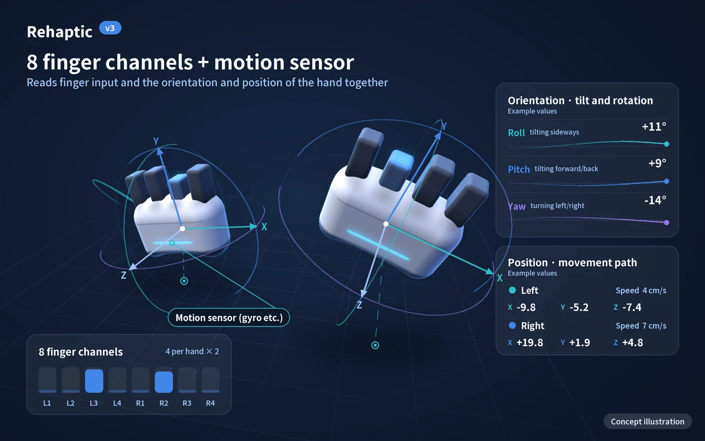
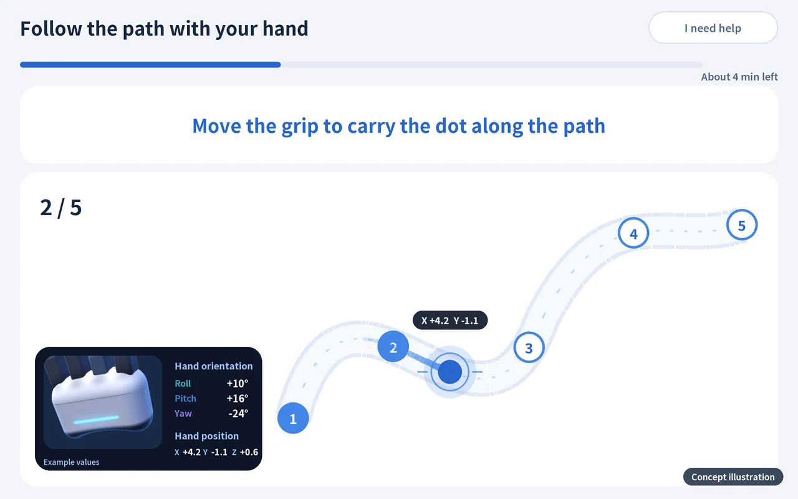
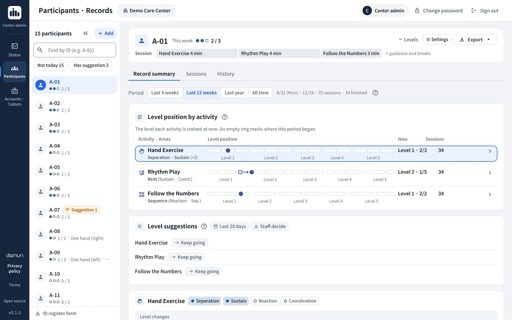

Technology
Reading each finger,
keeping a record
Rehaptic reads finger-by-finger input and automatically records how training was done, sorted into seven areas. As records build up, it suggests levels, and people decide. For the next generation, we plan to read hand movement with a motion sensor too.
Planned for launch
- 8Independent levers
4 per hand × 2 - 0.1 sInterval of lever-position
signals for each finger - 7Recorded
areas - 3Domestic patent
applications (not yet granted)
On this page
Platform & setup
Next generation (v3)
Records & activities
Suggestions & supporting details
Platform
From input to records, one platform
It reads finger input, guides you through contents and records values. Dashed items are future plans.
Current setup Future plans
What makes it different
Finger-by-finger input and press confirmation
Four independent levers per hand are pressed on their own. Light, the screen and sound together show which finger to press, and a vibration confirms a full press. The independent finger input and haptic structure is the subject of three domestic patent applications (pending, not yet granted).
Records by area and by finger
Training records are kept automatically under seven areas: reaction, separation, control, sustain, beat, sequence and coordination. For each trial, the reaction time, result, press depth and fingers pressed along are saved.
Records built for how organizations work
Participants are registered by ID number instead of name, and records gather in the admin web without staff writing them down. Levels are only suggested; staff confirm and apply them.
From the grip to the admin web, in one line
Four stages that finger movement passes through until it becomes a record.
-
Haptic grips
A left and right pair. Each finger has its own lever for input. Light gives the signal, and a vibration confirms each press.
8 levers · signal about every 0.1 s -
Bluetooth
Tablet app
Guides training on an Android tablet and records each trial. If the internet drops, it keeps the records and sends them once reconnected.
Sound · large text · practice first -
Internet
Record server
Stores trials by ID number, totals them by session and week, and calculates level suggestions.
ID numbers, not names -
Web browser
Admin web
Shows center status and each participant's records, provides PDF reports and CSV, applies level suggestions and manages accounts.
Staff apply suggestions
Next generation · v3
From fingers to the movement of the hand
We plan to develop a next-generation grip (v3) with a motion sensor (such as a gyro) that reads the orientation (tilt and rotation), position and movement path of the hand together with finger input.
A sensor that reads orientation and position
A motion sensor inside the grip reads the tilt and rotation of the hand, and where it moved from and to (position and path).
Hand-movement contents
We are building new contents in which you move your hand while holding the grip. Finger input and hand movement are used together.
Plan suggestions from records
We are planning a feature that gathers finger and movement records and suggests a training plan. Staff decide whether to apply it.

Grip + motion sensor

Hand-movement contents
The next generation (v3) is a development plan, and its items and schedule may change. Any values it keeps would also be records of how training was done, not a diagnosis or a judgment of effect. The pictures and video above are concept illustrations, not actual product or app screens.
Seven areas of records
Training records are sorted into seven areas. The names label groups of records; they are not measures of a person's ability. Screens for older adults show only content names.
| Area | What is recorded | Recorded value | Contents |
|---|---|---|---|
| Reaction | Time from the signal to the press | Time taken (ms, median) | Mole catching · reaction time in Hand exercise and Follow the Numbers |
| Separation | How often other fingers were pressed along with the target finger | Number and kind of fingers pressed along | Hand exercise · One Finger at a Time |
| Control | How deep the lever was pressed | Press depth (%, lever travel, not force) | Water Pour |
| Sustain | How long the press was held, out of the target time | Hold time (% of target) | Hand exercise · Water Pour |
| Beat | Share of presses made on the beat | Presses on the beat (%) | Rhythm play · Beat Echo |
| Sequence | Number of positions remembered and pressed in order | Positions correct | Follow the Numbers |
| Coordination | Share of tasks each hand completed | Completed share per hand (left and right shown separately, %) | Fist Dodge · two-handed Hand exercise and Rhythm play |
Each content looks at different areas
One content covers several areas together, and each area is carried by several contents.
Swipe sideways to see more activities.
| Area | Hand exercise | Rhythm play | Follow the Numbers | Mole catching | Fist Dodge | One Finger at a Time | Water Pour | Beat Echo |
|---|---|---|---|---|---|---|---|---|
| Reaction | Also covered | Not covered | Also covered | Main area | Not covered | Not covered | Not covered | Not covered |
| Separation | Main area | Not covered | Also covered | Also covered | Not covered | Main area | Not covered | Not covered |
| Control | Not covered | Not covered | Not covered | Not covered | Not covered | Also covered | Main area | Not covered |
| Sustain | Main area | Also covered | Not covered | Not covered | Also covered | Not covered | Also covered | Not covered |
| Beat | Not covered | Main area | Not covered | Not covered | Not covered | Not covered | Not covered | Main area |
| Sequence | Not covered | Not covered | Main area | Not covered | Not covered | Not covered | Not covered | Not covered |
| Coordination | Also covered | Also covered | Not covered | Not covered | Main area | Not covered | Not covered | Not covered |
Main area Also covered
The reaction time in Mole catching is not added to the reaction values of other contents.
Training contents and the level structure
Each content has a level ladder, and a level is set by its shape (stage and step) and its speed.
| Content | How it works | Main areas | Level steps |
|---|---|---|---|
| Hand exercise | Press the finger of the lit number and keep holding for a set time. Five formats (one hand at a time, both hands, two on one hand, different on each hand, two on each hand) run in a loop. | Separation · Sustain (Reaction · Coordination) | 13 steps |
| Rhythm play | Press falling circles with the right finger in time with the background music. One song is one round. | Beat (Sustain · Coordination) | 19 steps |
| Follow the Numbers | Watch numbers one at a time, remember them and press them in the same order. Five rounds make one block. | Sequence (Reaction · Separation) | 8 steps |
| Mole catching | A reaction game in which you press the lit finger to catch the mole that pops up. Each round goes explanation, practice, then the main round. | Reaction (Separation) | 7 steps |
| Fist Dodge | Squeeze the whole left hand to go left and the whole right hand to go right, one lane at a time, dodging the dark clouds that come down. You open and squeeze again to move again, and both hands are needed. | Coordination (Sustain) | 10 steps |
| One Finger at a Time | Gently press only the lit finger and hold until the flower blooms. The other fingers rest. | Separation (Control) | 12 steps |
| Water Pour | Water pours as deep as you press the lever. Match the water level to the yellow band and hold until the flower blooms. Let go and it goes down. | Control (Sustain) | 12 steps |
| Beat Echo | Listen to the beat to the end, then press the same beat on your turn. | Beat | 10 steps |
Level steps are the number of steps on the level ladder. Planned contents such as seasonal and regional theme packs are not in this table.
From grip signal to record
The order in which a grip signal becomes a per-finger record and a level suggestion.
Grip signal
The lever position is sent for each finger about every 0.1 seconds.
Calibration
Using the "released to fully pressed" length that staff calibrated, it is read as press depth (%).
Trial record
For each trial, the per-finger reaction time, result, press depth and fingers pressed along are saved automatically.
Totals
Records are gathered by session and week and shown in the admin web, PDF reports and CSV.
Suggestion
Levels are suggested from the records, and staff confirm before applying.
Values saved for one trial Example values
Hand exercise · left hand, finger 2
- Result
- Success
- Reaction time
- 620 ms
- Press depth
- 78 %
- Pressed along
- None
The vertical mark is the press depth that counts (65% by default; staff choose 50, 65 or 80%). The values above are fictional examples for explanation.
How one trial is counted Accuracy calculation
Based on trials attempted
- Success
- Counts as 1
- Partial success
- Counts as 0.5
- Failure
- Counts as 0
- Timeout
- Left out of the denominator and counted separately
If no trial was attempted, accuracy is "no value", not 0.
How the values are calculated
The formulas the code calculates, written out as they are.
- Accuracy
- Sum of (success 1 · partial success 0.5 · failure 0) ÷ trials attempted × 100. Timeouts are left out of the denominator and counted separately.
- Time taken
- The median reaction time (ms) of trials, excluding timeouts and Rhythm play. Rhythm play is measured separately with the beat measures.
- Completed share per hand
- For each hand, times completed ÷ times attempted × 100. Left and right are shown separately and are not combined into one number.
- Hold time
- In Hand exercise, the sum of time actually held (counted only up to the target time) ÷ the sum of target times × 100.
- Presses on the beat
- (exact + good × 0.5) ÷ rhythm trials × 100. A missed note is recorded as a failure.
- Press depth
- How many % of the calibrated length the target finger's lever went at its deepest during a trial (0 to 100). It is the distance the lever moved, not force, and is compared only with the same user's other times.
- Pressed along
- How many times another finger was pressed instead of (or together with) the finger that should be pressed, and which fingers. A press counts only when it is complete, and a finger that is newly pressed is counted once.
Press depth and fingers pressed along are recorded values and do not enter the formulas for accuracy or level suggestions. The definitions are drafts under development and may change.
Levels are suggested, and people decide
It does not look at accuracy alone; it also looks at timeouts caused by not pressing.
Starting level
At first, "Find the starting level" (about 4 minutes, one game of pressing the lit numbers) suggests a starting level for each content, and staff confirm before it is applied.
Trials that are counted
Only trials at the current level in the last 28 days, and only after the level was last changed.
Timeouts are weighed too
If the timeout share is 20% or more, the level is not raised even when accuracy is high, and "Continue" is shown with the reason. At 50% or more, "Please check the position and the device once" is added. This keeps timeouts caused by not pressing from being read as "too hard" and lowering the level.
No immediate reversal
After a level change, it is not suggested again until two sessions have passed.
The app never changes it secretly
Staff decide in the admin web with [Apply], [Later] or [Ignore]. Applying, ignoring and changing, with the reasons, are kept in the history.
The threshold values are provisional and will be set after reviewing actual use records.
Looking ahead: plan suggestions from records
We are exploring a feature that uses AI to suggest training plans from accumulated training records. It is not part of the product yet, and its timing has not been set.
Records
Levels and session records build up for each activity.
Suggestion
Those records are used to suggest the next training plan.
Staff confirmation
Staff decide whether to apply it. The app does not change anything on its own.
Checking the applicable regulations comes first. It would only suggest a training plan; it would not judge a person's condition and is not a diagnosis or a decision about treatment.
Shown at the level of each finger
The record summary in the admin web gives no scores or rankings. It shows weekly attendance, where each activity's level stands, and records by finger.
- RecordsPerformance records and reports by finger
- SuggestLevel and speed suggestions based on performance records
- PlanTraining plan suggestions from records (planned; staff apply them)

The admin web currently has a Korean interface only, so this screen is an English rendering of the actual screen of a development environment, using only ID numbers and fictional data. Product specifications, screens and available languages may change.
Related patents
We have filed three domestic patent applications covering independent finger input, the haptic structure and training composition (pending, not yet granted).
| Application no. | Filing date | Certificate |
|---|---|---|
| 10-2025-0169761 | 2025.11.11 | View certificate |
| 10-2026-0112080 | 2026.06.19 | View certificate |
| 10-2026-0112861 | 2026.06.20 | View certificate |
Official certificates of application (Korean and English). Personal details and invention titles are redacted. Drawings and claims are not shown because they have not been published.
Performance record noticeThese values are records of how training was done. They are not a diagnosis, and medical decisions belong to a medical professional.
Questions about the technology or adoption?
Feel free to ask about how records are kept, the package, center adoption and partnerships.